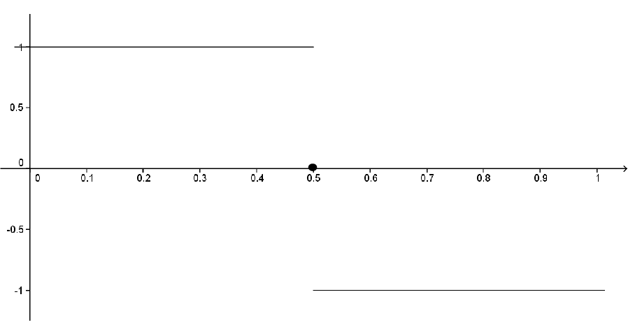

Section 11.1 Uniform Convergence
We have developed precise analytic definitions of the convergence of a sequence and continuity of a function and we have used these to prove the EVT and IVT for a continuous function. We will now draw our attention back to the question that originally motivated these definitions, “Why are Taylor series well behaved, but Fourier series are not necessarily?” More precisely, we mentioned that whenever a power series converges then whatever it converged to was continuous. Moreover, if we differentiate or integrate these series term by term then the resulting series will converge to the derivative or integral of the original series. This was not always the case for Fourier series. For example consider the function
\begin{align*}
f(x) \amp = \frac{4}{\pi}\left(\sum_{k=0}^\infty\frac{(-1)^k}{2k+1}\cos\left((2k+1)\pi x\right)\right)\\
\amp = \frac{4}{\pi}\left(\cos(\pi x)-\frac13\cos(3\pi x)+\frac15 (5\pi x)-\ldots\right)\text{.}
\end{align*}
We have seen that the graph of \(f\) is given by

If we consider the following sequence of functions
\begin{align*}
f_1(x)=\amp \frac{4}{\pi}\cos\left(\pi x\right)\\
f_2(x)=\amp \frac{4}{\pi}\left(\cos \left(\pi x\right)-\frac{1}{3}\cos\left( 3\pi x\right)\right)\\
f_3(x)=\amp \frac{4}{\pi}\left(\cos\left(\pi x\right)-\frac{1}{3}\cos\left(3\pi x\right)+\frac{1}{5}\cos\left(5\pi x\right)\right)\\
\amp \vdots
\end{align*}
we see the sequence of continuous functions \(\left(f_n\right)\) converges to the non-continuous function \(f\) for each real number \(x\text{.}\) This didn’t happen with Taylor series. The partial sums for a Taylor series were polynomials and hence continuous but what they converged to was continuous as well.
The difficulty is quite delicate and it took mathematicians a while to determine the problem. There are two very subtly different ways that a sequence of functions can converge: pointwise or uniformly. This distinction was touched upon by Niels Henrik Abel (1802-1829) in 1826 while studying the domain of convergence of a power series. However, the necessary formal definitions were not made explicit until Weierstrass did it in his 1841 paper Zur Theorie der Potenzreihen (On the Theory of Power Series). This was published in his collected works in 1894.
It will be instructive to take a look at an argument that doesn’t quite work before looking at the formal definitions we will need. In 1821 Augustin Cauchy “proved” that the infinite sum of continuous functions is continuous. Of course, it is obvious (to us) that this is not true because we’ve seen several counterexamples. But Cauchy, who was a first rate mathematician was so sure of the correctness of his argument that he included it in his textbook on analysis, Cours d’analyse (1821).
Problem 11.1.1.
Find the flaw in the following “proof” that \(f\) is also continuous at \(a\text{.}\)
Suppose \(f_1, f_2, f_3, f_4 \ldots\) are all continuous at \(a\) and that \(\sum_{n=1}^\infty f_n=f\text{.}\) Let \(\eps>0\text{.}\) Since \(f_n\) is continuous at \(a,\) we can choose \(\delta_n>0\) such that if \(\abs{x-a}\lt \delta_n,\) then \(\abs{f_n(x)-f_n(a)}\lt \frac{\eps}{2^n}\text{.}\) Let \(\delta=\inf(\delta_1,\delta_2,\delta_3,\ldots)\text{.}\) If \(\abs{x-a}\lt \delta\) then
\begin{align*}
\abs{f(x)-f(a)} \amp = \abs{\sum_{n=1}^\infty f_n(x) - \sum_{n=1}^\infty f_n(a) }\\
\amp = \abs{\sum_{n=1}^\infty \left(f_n(x)-f_n(a)\right) }\\
\amp \le \sum_{n=1}^\infty \abs{f_n(x)-f_n(a) }\\
\amp \le \sum_{n=1}^\infty \frac{\eps}{2^n}\\
\amp \le \eps\sum_{n=1}^\infty \frac{1}{2^n}\\
\amp = \eps\text{.}
\end{align*}
Thus \(f\) is continuous at \(a\text{.}\)
Definition 11.1.2.
Let \(S\) be a subset of the real number system and let \(\left(f_n\right)=\left(f_1,f_2,f_3,\,\ldots\right)\) be a sequence of functions defined on \(S\text{.}\) Let \(f\) be a function defined on \(S\) as well. We say that \(\left(f_n\right)\) converges to \(f\) pointwise on \(S\) provided that for all \(x\in S,\) the sequence of real numbers \(\left(f_n(x)\right)\) converges to the number \(f(x)\text{.}\) In this case we write\(\,f_n\ptwise f\) on \(S\text{.}\)
Symbolically, we have \(f_n\ptwise f\text{ on } S\Leftrightarrow \forall\,x\in S,\forall\ \eps>0,\,\exists\ N\) such that \(\left(n>N \Rightarrow|f_n(x)-f(x)|\lt \eps\right)\text{.}\)
This is the type of convergence we have been observing to this point. By contrast we have the following new definition.
Definition 11.1.3.
Let \(S\) be a subset of the real number system and let \(\left(f_n\right)=\left(f_1,f_2,f_3,\,\ldots\right)\) be a sequence of functions defined on \(S\text{.}\) Let \(f\) be a function defined on \(S\) as well. We say that \(\left(f_n\right)\) converges to \(f\) uniformly on \(S\) provided \(\forall\ \eps>0,\,\exists\ N\) such that \(n>N\Rightarrow|f_n(x)-f(x)|\lt \eps\text{ , } \forall\
x\in S\text{.}\)
In this case we write \(f_n\unif f\) on \(S\text{.}\)
The difference between these two definitions is subtle. In pointwise convergence, we are given a fixed \(x\in S\) and an \(\eps>0\text{.}\) Then the task is to find an \(N\) that works for that particular \(x\) and \(\eps\text{.}\) In uniform convergence, one is given \(\eps>0\) and must find a single \(N\) that works for that particular \(\eps\) but also simultaneously (uniformly) for all \(x\in S\text{.}\) Clearly uniform convergence implies pointwise convergence as an \(N\) which works uniformly for all \(x,\) works for each individual \(x\) also. However the reverse is not true. This will become evident, but first consider the following example.
Problem 11.1.4.
Let \(0\lt b\lt 1\) and consider the sequence of functions \(\left(f_n\right)\) defined on \([0,b]\) by \(f_n(x)=x^n\text{.}\) Use the definition to show that \(f_n\unif 0\) on \([0,b]\text{.}\)
Hint.\(|x^n-0|=x^n\leq b^n\text{.}\)
Uniform convergence is not only dependent on the sequence of functions but also on the set
\(S\text{.}\) For example, the sequence
\(\left(f_n(x)\right)=\left(x^n\right)_{n=0}^\infty\) of
Problem 11.1.4 does not converge uniformly on
\([0,1]\text{.}\) We could use the negation of the definition to prove this, but instead, it will be a consequence of the following theorem.
Theorem 11.1.5.
Consider a sequence of functions \(\left(f_n\right)\) which are all continuous on an interval \(I\text{.}\) Suppose \(f_n\unif f\) on \(I\text{.}\) Then \(f\) must be continuous on \(I\text{.}\)
Sketch of Proof.
Let \(a\in I\) and let \(\eps>0\text{.}\) The idea is to use uniform convergence to replace \(f\) with one of the known continuous functions \(f_n\text{.}\) Specifically, by uncancelling, we can write
\begin{align*}
\left|f(x)-f(a)\right|\amp =\left|f(x)-f_n(x)+f_n(x)-f_n(a)+f_n(a)-f(a)\right|\\
\amp \leq \left|f(x)-f_n(x)\right|+\left|f_n(x)-f_n(a)\right|+\left|f_n(a)-f(a)\right|
\end{align*}
If we choose \(n\) large enough, then we can make the first and last terms as small as we wish, noting that the uniform convergence makes the first term uniformly small for all \(x\text{.}\) Once we have a specific \(n,\) then we can use the continuity of \(f_n\) to find a \(\delta>0\) such that the middle term is small whenever \(x\) is within \(\delta\) of \(a\text{.}\)
Problem 11.1.6.
Problem 11.1.7.
Consider the sequence of functions \(\left(f_n\right)\) defined on \([0,1]\) by \(f_n(x)=x^n\text{.}\) Show that the sequence converges to the function
\begin{equation*}
f(x)= \begin{cases}0\amp \text{ if } x\in[0,1)\\ 1\amp \text{ if } x=1 \end{cases}
\end{equation*}
pointwise on \(\,[0,1],\) but not uniformly on \([0,1]\text{.}\)
Notice that for the Fourier series at the beginning of this chapter,
\begin{equation*}
f(x)=\frac{4}{\pi}\left(\cos\left(\frac{\pi}{2}x\right)-\frac{1}{3}\cos\left( 3\pi x\right)+\frac{1}{5}\cos\left(5\pi x\right)-\frac{1}{7}\cos\left(7\pi x\right)+\cdots\right)
\end{equation*}
the convergence cannot be uniform on \((-\infty,\infty),\) as the function \(f\) is not continuous. This never happens with a power series, since they converge to continuous functions whenever they converge. We will also see that uniform convergence is what allows us to integrate and differentiate a power series term by term.